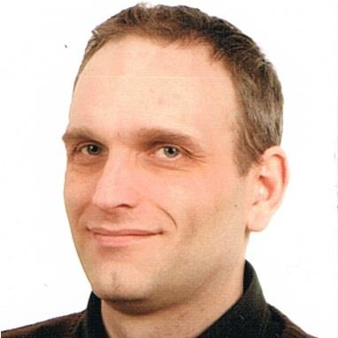

Sebastian Woldanski
Summary
IT Generalist - 20+ years experience in offering secure and fully managed IT services as freelancer (sole trader).
My main focus is to help clients succeed through a range of business-relevant solutions and services using leading technology IT platforms and deliver a truly outstanding, and unique customer-centric experience.
Currently I'm looking for an opportunity to become a member of IT team. A position can be permanent or part time. I can work remotely or onsite.
Skills
- best practice call management: investigate, diagnose and test procedures to resolve incidents, within an agreed fix time period,
- act as the first point of contact for all users onsite, for issues that cannot be resolved remotely,
- identify repeat incidents as problems and assist in their resolution,
- ensure all incidents are closed in a timely manner, ensure relevant details are logged within the solution,
- ITIL based approach to change and change management techniques,
- comply with customers’ specific processes,
- experience in administering Microsoft Office ( 2007 2010 ), Windows Server ( 2008 2012 R2 ), Exchange ( 2003 2010 ), MS SQL ( 2005 2014 ),
- good knowledge of technologies related to Windows 7, 8 and 10, Active Directory, and Group Policy,
- experience in administering Linux Servers ( Debian 6+, Ubuntu 14.04+, CentOS 5+ ), LAMP environment ( Apache, MySQL, PHP ), Mail servers ( Postfix, Exim, Dovecot ), Dns ( Bind9 ),
- experience in administering and programming Google Apps for Work, Wordpress CMS, ImpressPages CMS,
- experience in administering virtualization based on CoreOS, Docker, Citrix XenServer 6.2, VMware ESXi 5.0+ and Hyper-V (plain old KVM too),
- experience in administering cloud services: AWS, DigitalOcean, Vultr, OpenStack,
- experience in administering local LAN, WLAN and WAN connectivity with redundancy,
- ability to provide remote support using remote tools like Windows RDP, TeamViewer, VNC, SSH,
- experience in monitoring IT infrastructure using Nagios based tools ( openITCOCKPIT, Naemon ),
- exeprience in documenting IT infranstructure using ITIL based methodology ( iTop ),
- experience in programming industrial and building automation PLC ( Siemens S7-300, S7-1200, TIA Portal, Loytec Linx 1xx, L-WEB 8xx, L-VIS ),
- flexible and adaptable approach, able to cope with tasks simultaneously,
- a good understanding and some practical experience of ownership of logging, updating and closing incidents within a specified SLA,
- ability to manage communication between clients and 3rd Party vendors,
- experience in supporting multiple client infrastructures,
Certifications
EFSET 70 Advanced (CEFR C1) - https://www.efset.org/
Knowledge & Training
Microsoft Virtual Academy - https://mva.microsoft.com/Profile.aspx?alias=2910668
Coursera - https://www.coursera.org/user/i/3f08ee13281dea1330731854d78cdbf8
Free Code Camp - http://www.freecodecamp.com/swoldanski
Electro-Electronic College (ZSEE Bytom im M.Curie-Sklodowskiej), Katowicka 35, Bytom, Poland - technican electronic with specialization in electronic machines and digital systems - comparable to Advanced Vocational Certificate of Education (AVCE) / BTEC National Diploma standard In terms of N/SVQ comparability - NVQ level 3 award within UK National Qualification Framework
Drivers Licence
full, clean
Languages
English, Polish